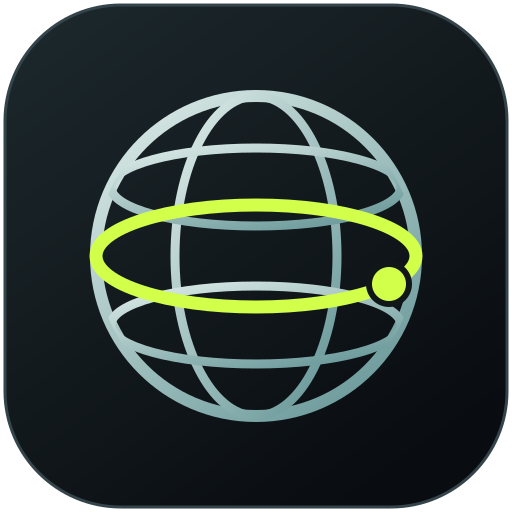

Streaming · available above
Enable Latitude Streaming, then open Stream in the sidebar. Broadcast your scenes and finished audio mix.

latitude.Choose your screen, connect your voice, and make it yours.
Your audio and video stay on your computer.Keep Latitude light. Add the tools you want, and switch them off when you don’t need them.
Change add-ons after recording, streaming, or export finishes.
No add-ons installed. Your recorder already has everything it
needs.
Start with a theme or layout pack to make it your own.
Enable Latitude Streaming, then open Stream in the sidebar. Broadcast your scenes and finished audio mix.
Enable Latitude Editor, then open Edit in the sidebar. Turn takes into episodes and clips with linked audio, layers, titles, fades and local export.
Executable third-party mod installation is not available in this beta. This page supports settings packs and reviewed modules included in a build. Optional tools load only when enabled.
We’ll listen to the room, then to your normal speaking voice. You’ll get a suggested input gain and noise-control threshold.
Start about a hand’s width from the mic, slightly off-axis. Use a pop filter if you have one.
Aim for raw speech peaks around −12 to −6 dBFS. If the input clips, turn down the mic or interface gain.
Keep speaker sound out of the microphone. Use your interface’s direct monitoring when recording desktop audio.
Record a short test. If the voice arrives early, add a little audio delay in Inputs & outputs.
Updates are available in the desktop app.
One check per launch. Nothing downloads until you choose. Skipping waits until your next launch.
Five looks: Signal, Dusk, Linen, Golden latitude, and Tide. Your choice is remembered.
Import a community theme and layout pack, or share your composition. Settings only, never executable code.
MIT licensed source. See MODDING.md to extend Latitude.
Screen capture keeps native pixels until your crop is applied. Match output resolution to the area you record; enlarging a small window cannot add detail. Efficient uses less storage; High detail gives complex scenes more room and uses finer scaling.
Preview quality does not lower recording quality. 4K and 60 fps need capable hardware; watch the frame-rate indicator during a test take.
Live audio runs at 48 kHz. Processing backups are 32-bit float; editing stems export as 24-bit WAV.
Your preferred file is created after you stop when automatic export is on. During recording, recoverable video and separate audio originals are saved first.
Desktop app required for recording
Original takes stay available after export. Interrupted recordings appear in Takes so you can attempt recovery.
Latitude · desktop beta
Shortcuts are active while Latitude is open.